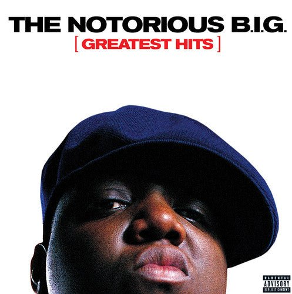

Rap is one of my favorite genres because it uses rhythm, storytelling, and emotion. I like how rap artists can talk about real experiences, confidence, struggles, and creativity. Not to mention the hisotry of rap and some of the OG rappers like Tupac and Biggie who had helped build a biffer platform for african americans or just music itself.